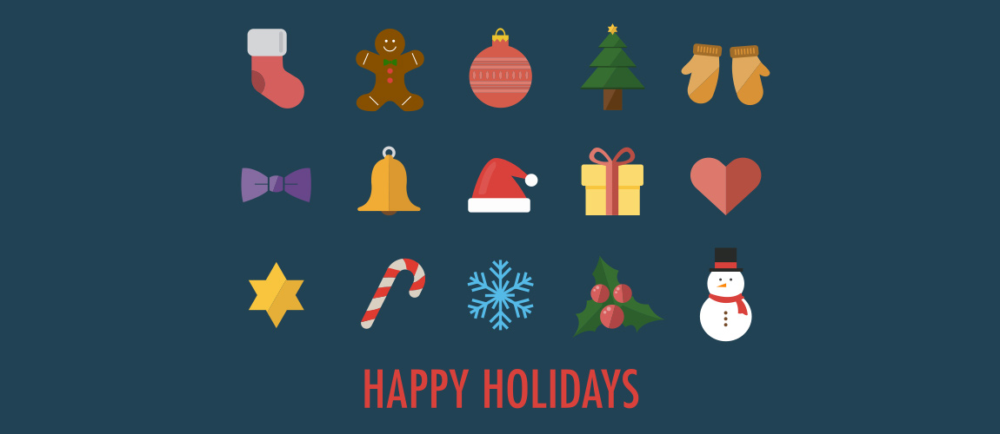
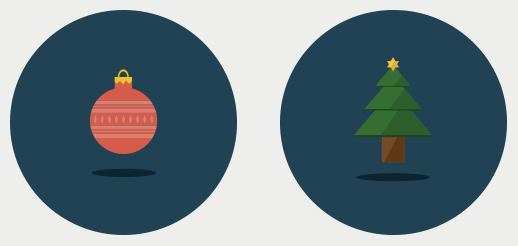

Designing Icons
The evolution of my icon creation
Icons are an effective way for expressing ideas and information. They serve as a visual language that help people to communicate without verbal language boundaries. I always enjoy the simplicity of icons
pre-
Icons I created in college were pretty unrefined as my illustration skill was fresh. They were in hand-drawn style. I created a set of icons for my infographic titled "Waiting time in a week".
Storytelling using pictograms
My theis project at MICA was a book of 26 pictograms, each one comprised of four individual icons. Every entry represents a cultural experience that I have had in my time in the US.
working professional
After I graduated and as a working professional, my skill
